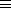

Next: 5.2.3 Member Types
Up: 5.2 More About Types
Previous: 5.2.1 More Types Meaningful
When given a type specifier, Python will often rewrite it into a
different (but equivalent) type. This is the mechanism that Python
uses for detecting type equivalence. For example, in Python's
canonical representation, these types are equivalent:
(or list (member :end))  (or cons (member nil :end))
This has two implications for the user:
- The standard symbol type specifiers for atom,
null, fixnum, etc., are in no way magical. The
null type is actually defined to be (member
nil), list is (or cons null), and
fixnum is (signed-byte 30).
- When the compiler prints out a type, it may not look like the
type specifier that originally appeared in the program. This is
generally not a problem, but it must be taken into consideration
when reading compiler error messages.
Raymond Toy
Mon Sep 22 16:34:07 EDT 1997